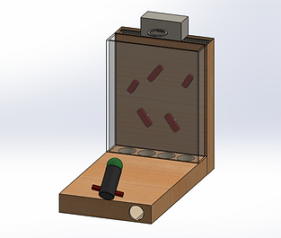
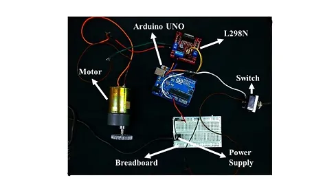
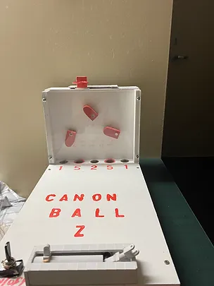

projects
The following project was completed as a requirement to the ME-100 course during my 1A term. The Cannon-Ball Z is an interactive toy intended for youths aged 8-12 years old. The design uses the principles of gear ratios and mechanisms along with electronic circuits that is programmed using Arduino to deliever the best entertainment. To play, the player flips switch which intiaties a motor within the toy. The electric motor rotates the internal gears that are connected in mesh to spin the shafts to which the obstacles (illustrated as red slots) are connected to. These gears are also connected to a rack and pinion gear system located at the top of the toy which allows the hoop to translate laterally. The Arduino is used to periodically reverse the rotation of the motor to allow the hoop to osicillate back and forth. Once the hoop is moving, the player tries to launch a small spherical projectile using a spring launcher and score the projectile through the hoop, which earns them points.


